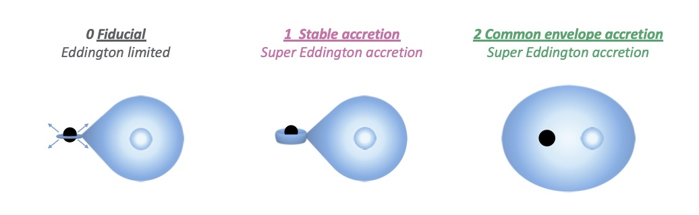
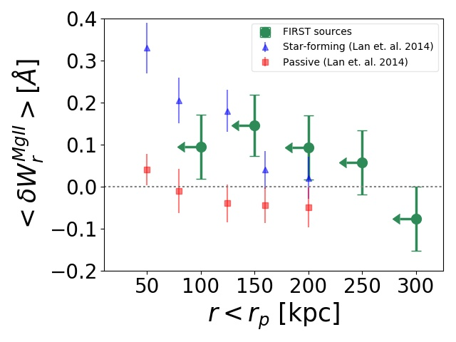

Polluting the Pair-instability Mass Gap for Binary Black Holes through Super-Eddington Accretion in Isolated Binaries

The theory of pair-instability supernovae predicts a gap in the mass distribution of stellar mass black holes (BHs) between approximately 45 and 130 solar masses.
We examine the possibility of creating BHs with masses in the gap through isolated binary evolution by allowing BHs to accrete mass from their stellar companion at a super-Eddington rate.
For more information see here.

Galaxies with monstrous black holes in galaxy cluster environments
Massive early-type galaxies follow a tight relation between the mass of their central supermassive black hole (\(M_{\rm BH}\)) and their stellar mass (\(M_{\star}\)).
The origin of observed positive outliers from this relation with extremely high black hole mass (\( M_{BH} > 10^9 M_{\odot} \)) remains unclear.
We present a study of such outliers in the Hydrangea/C-EAGLE cosmological hydrodynamical simulations, designed to enable the study of high-mass galaxy formation and evolution in cluster environments.
For more information see the full acticle, and movies of the most relevant simulations.

The inter and circum galactic medium (IGM & CGM) play a crucial role in understanding galaxy formation and evolution. One of the most common signatures found in quasar spectra is the strong Mg II absorption line doublet.
This study describes a statistical analysis of the abunance of cold gas traced by MgII absorbers by cross correlating the absorbers to quasars observed in radio in the BOOTES field of LOFAR, the NRAO VLA FIRST survey and the LARGESS survey.
The gaseous environment of radio galaxies